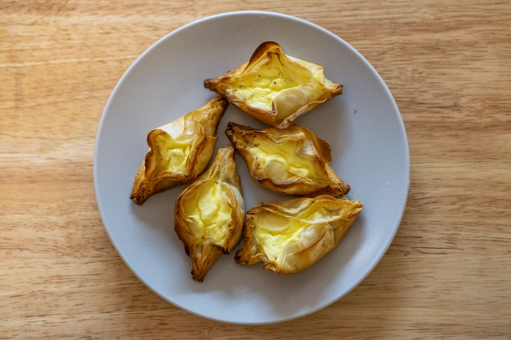

Pastizzi

Pastizzi (or, a singular pastizz) are small pastries made with a crispy,
flaky dough and typically stuffed with fillings of ricotta cheese.
Pastizzi are typically savoury, but can be filled with anything!
Ingredients
- 200 gm whole milk ricotta cheese
- 1 egg
- 50 gm unsalted butter, melted
- 6 sheets of phyllo pastry
Steps
-
Preheat oven to 220°C. In a small bowl, combine the ricotta and the egg.
Mix until the egg is well incorporated. Season with salt and pepper. Set
aside.
-
Working one sheet at a time and keeping the remainder of the phyllo
pastry covered under a damp tea towel, lay a sheet of pastry on a clean
work surface and brush liberally with butter. Gently top with another
sheet of pastry, brush with butter and repeat until all 6 sheets have
been used. Do not brush butter over the top sheet of pastry.
-
Using a 10cm wide circular cutter, cut 10 circles out of the prepared
dough.
-
Working one circle at a time, spoon a tablespoon of ricotta filling into
the centre of the circle. Fold the circle in half over the filling and
pinch the ends together. Flatten the bottom on the work surface and
transfer to a parchment-lined baking sheet. Repeat with the remaining
dough circles.
-
Brush the formed pastizzi with remaining melted butter and then transfer
to the oven. Bake for about 10 minutes, or until the pastry is a deep
golden brown and the filling is puffed. Allow to cool for 5 minutes
before eating.
Home